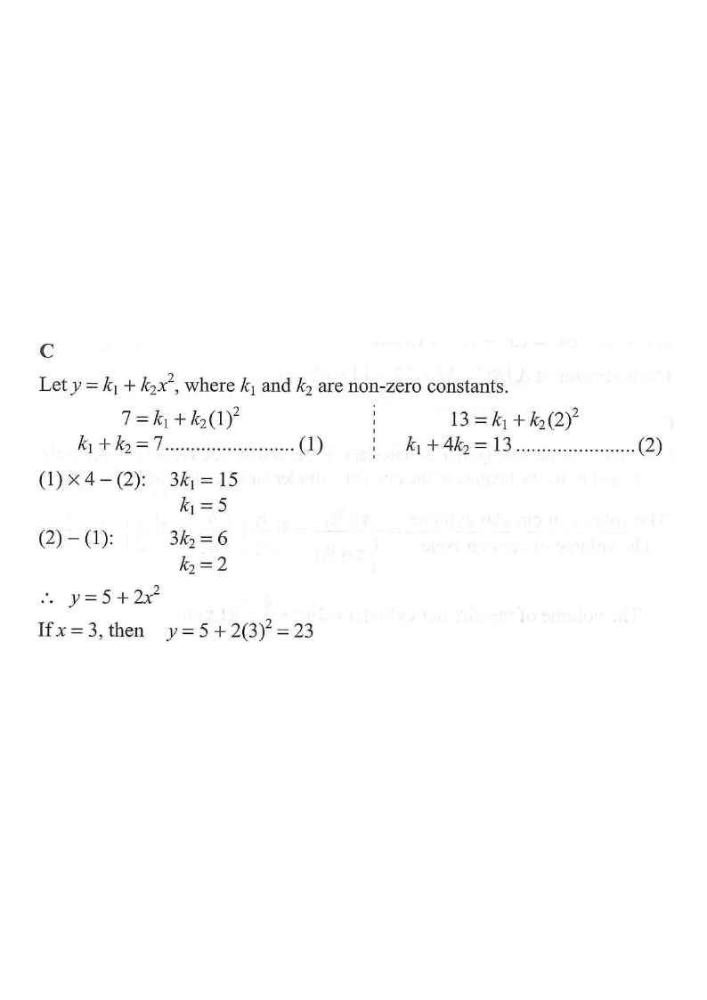

Interactive figure
Scroll the steps on the right.
HKDSE 2017 · Paper 2 · Q12
[2017MC#12]
It is given that $y$ is the sum of two parts, one part is a constant and the other part varies as $x^2$. When $x=1$, $y=7$ and when $x=2$, $y=13$. If $x=3$, then $y=$

Step-by-step solution
One part is a constant ($k_1$) and the other part varies as $x^2$, i.e. $k_2x^2$. Hence
$$y = k_1 + k_2x^2,\qquad k_1,k_2 \neq 0.$$
“Sum of two parts” → add a constant to a term proportional to $x^2$.
When $x=1,\;y=7$: $7=k_1+k_2(1)^2$ → (1) $\;k_1+k_2=7$
When $x=2,\;y=13$: $13=k_1+k_2(2)^2$ → (2) $\;k_1+4k_2=13$
Each data pair gives one linear equation in $k_1,k_2$.
$(2)-(1)$: $3k_2 = 6 \;\Rightarrow\; k_2 = 2$
Substitute into (1): $k_1 + 2 = 7 \;\Rightarrow\; k_1 = 5$
$$\therefore\; y = 5 + 2x^2$$
Equivalent check: $(1)\times 4-(2)$ gives $3k_1=15\Rightarrow k_1=5$, then $k_2=2$.
$$y = 5 + 2(3)^2 = 5 + 2(9) = 5 + 18 = 23$$
Compare with the options: $23$ matches choice C — also consistent with the graph continuing upward.
Question. It is given that \(y=k_{1}+k_{2}x^{2}\), where \(k_{1}\) and \(k_{2}\) are non-zero constants. When \(x=1\), \(y=9\); when \(x=3\), \(y=25\). Find \(y\) when \(x=4\).